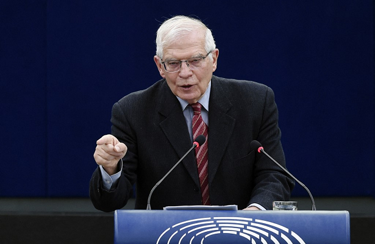

UE diz que Rússia comete crime de guerra ao bloquear grãos ucranianos
20/06/2022 08h53 - Atualizado 20/06/2022 08h53
O chefe de política externa da União Europeia, Josep Borrell, disse nesta segunda-feira, 20, que a Rússia está cometendo um crime de guerra ao bloquear a exportação de milhões de toneladas de grãos ucranianos. A declaração ocorre enquanto ministros das Relações Exteriores de países membros do bloco se reúnem para discutir maneiras de liberar a safra em meio a uma crise alimentar global.
“Não se pode imaginar que milhões de toneladas de trigo permaneçam bloqueadas na Ucrânia enquanto no resto do mundo as pessoas passam fome”, disse Borrell. “Este é um verdadeiro crime de guerra.”
O diplomata pediu à Rússia que abra as rotas do Mar Negro, cruciais para exportar grãos ucranianos.
A Ucrânia é um dos principais fornecedores de trigo do mundo, mas as exportações estão paralisadas e mais de 20 milhões de toneladas de grãos ficaram presos em silos desde que a Rússia invadiu o país em fevereiro, posteriormente bloqueando seus portos.
A Rússia nega a responsabilidade pela crise alimentar, culpando, ao invés disso, as sanções impostas a Moscou por conta da invasão, que levaram a um salto nos preços dos alimentos.
O ministro das Relações Exteriores da Rússia, Sergei Lavrov, disse que era responsabilidade de Kiev resolver o problema das exportações, porque o exército ucraniano precisaria retirar as minas dos portos do Mar Negro. Segundo ele, Moscou não precisava fazer nada sobre o assunto.
As Nações Unidas tentam intermediar um acordo para retomar as exportações marítimas da Ucrânia em troca de facilitar as exportações russas de alimentos e fertilizantes, mas Moscou ainda não deu sinal verde.
Enquanto isso, a Alemanha e outros países estão trabalhando para permitir o transporte de grãos por rotas terrestres para liberar pelo menos parte do estoque, já que a nova colheita está começando, enquanto a antiga permanece em silos.
Kiev colheu um recorde de 84 milhões de toneladas de grãos em peso limpo em 2021, acima dos 65 milhões de toneladas em 2020. Devido à invasão da Rússia, neste ano agricultores plantaram 14,2 milhões de hectares de grãos durante a primavera boreal (no hemisfério norte), menos que os 16,9 milhões de hectares durante o mesmo período em 2021, segundo o Ministério da Agricultura da Ucrânia.
A ministra das Relações Exteriores da Alemanha, Annalena Baerbock, disse que Berlim apoiou a Polônia e a Romênia na adaptação de suas ferrovias para facilitar a exportação de grãos por vias terrestres.
“Está claro que, no final, certamente não conseguiremos escoar todo o estoque de grãos. Mas se conseguirmos liberar parte dele, em várias rotas, isso ajudará, pois estamos enfrentando um desafio global”, ela disse.